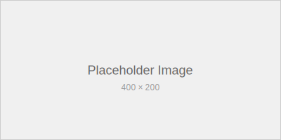

This post demonstrates some of the more advanced features available in Krik, including image handling, complex markdown, and feed generation.
Image Support
Krik automatically copies images and other static assets to the generated site:

Image Best Practices
When adding images to your posts:
- Store images in the
content/images/directory - Use descriptive filenames
- Include alt text for accessibility
- Optionally include title text for tooltips
- Consider using relative paths from your post location
Complex Tables
Here’s a more complex table showing Krik’s architecture:
| Component | Language | Purpose | Dependencies |
|---|---|---|---|
| Parser | Rust | Markdown → AST | pulldown-cmark, serde |
| Generator | Rust | AST → HTML | tera, chrono |
| Theme | CSS/JS | Styling & UX | Native browser APIs |
| i18n | Rust | Multi-language | HashMap collections |
| Feed | Rust | Atom generation | XML serialization |
Nested Lists and Complex Formatting
Project Structure
-
Core Engine (Rust)
- Markdown parsing with pulldown-cmark
- Template rendering with Tera
- File system operations
-
Theme System
- CSS custom properties for theming
- JavaScript for interactive features:
- Theme toggle functionality
- Footnote navigation
- Scroll-to-top behavior
- Responsive design breakpoints
-
Content Processing
- Front matter parsing (YAML)
- Asset copying (images, files)
- Language detection from filenames
- Table of contents generation
Advanced Markdown Features
Mixed Content Types
You can combine different content types effectively:
Quote with formatting: This blockquote contains italic, bold, and
inline code.It can also contain lists:
- First quoted item
- Second quoted item
And even code blocks:
println!("Code in quotes!");
Code with Explanation
Here’s how the theme toggle works:
function toggleTheme() {
// Get current theme or default to light
const currentTheme = document.documentElement.getAttribute('data-theme') || 'light';
// Switch to opposite theme
const newTheme = currentTheme === 'light' ? 'dark' : 'light';
// Apply new theme
document.documentElement.setAttribute('data-theme', newTheme);
// Save preference
localStorage.setItem('theme', newTheme);
// Update toggle icon
updateThemeIcon(newTheme);
}
The key aspects of this implementation:
- Uses
data-themeattribute on the root element - Leverages localStorage for persistence
- Provides smooth CSS transitions
- Works across page reloads
Feed Generation Details
Krik automatically generates an Atom feed (feed.xml) that includes:
Feed Metadata
- Site title from
site.toml - Last updated timestamp
- Self-referencing links
- Unique feed ID
Post Entries
- Only posts (not pages) are included
- Limited to 20 most recent posts
- Full HTML content with proper escaping
- Individual post IDs and timestamps
- Tag information (when available)
Link Resolution
When base_url is configured in site.toml, Krik uses the xml:base attribute for proper link resolution:
<feed xmlns="http://www.w3.org/2005/Atom" xml:base="https://example.com">
This ensures that relative links in your posts work correctly when viewed in feed readers.
Performance Considerations
Build Performance
Krik is designed for speed:
- Rust Performance: Native speed with zero-cost abstractions
- Parallel Processing: Multi-threaded where possible
- Incremental Building: Only processes changed files (planned feature)
- Memory Efficiency: Streaming processing for large sites
Runtime Performance
The generated sites are optimized for performance:
- Minimal CSS: No framework bloat, only necessary styles
- Progressive Enhancement: JavaScript enhances but isn’t required
- Responsive Images: Proper sizing and format recommendations
- Static Assets: Everything is static, no server-side processing
Accessibility Features
Krik generates accessible HTML by default:
Semantic Structure
- Proper heading hierarchy (H1 → H2 → H3)
- Landmark elements (nav, main, aside)
- List structures for navigation
Interactive Elements
- ARIA labels on buttons and controls
- Focus indicators for keyboard navigation
- Skip links for screen readers (planned)
Content Accessibility
- Alt text support for images
- Table headers and captions
- High contrast color schemes
This demonstrates many of Krik’s advanced capabilities. The combination of performance, features, and accessibility makes it an excellent choice for modern static sites.